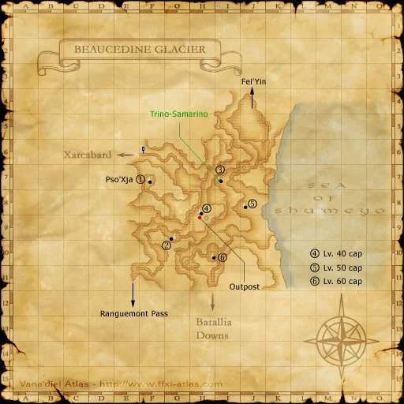

Before you begin
Be allied with Bastok, have Rank 5, and finish the preceding required story steps. Raise Rank Points if the mission is not offered.
People in this mission

Walkthrough
- Speak with Naji for the presidential briefing and New Fei’Yin Seal.
- Travel through Beaucedine Glacier to Fei’Yin, then Qu’Bia Arena at (K-8).
- Enter The Rank 5 Mission. Defeat Archlich Taber’quoan while controlling its skeleton allies.
- Receive the Burnt Seal and return to Naji.
Important notes
- Obtain the seal before travelling. The classic fight is level 50 capped; confirm the actual Zenith entry restriction.
Locations and references
| Place / NPC | Location | Reference |
|---|---|---|
| Arena entrance | Fei’Yin (K-8) | Location reference |
Completion and reward
Rank Points
Area maps
Open a zone below, then select a map to enlarge it. Match the named floors and grid coordinates in the steps; these are reference area maps, not a live position tracker.
Fei'Yin


Beaucedine Glacier



References
HorizonXI Wiki: Bastok 5-1 · LandSandBoat mission definition
The route summary covers the original story. Other servers’ extra rewards, level-cap settings and Trust rules are not promises of Zenith behavior. Confirm battlefield entry conditions in game.
NPC map locations
| NPC | Game-map location |
|---|---|
| Naji | Metalworks (J-8) |
Additional level-75 reference
|
Recommended:Sneak/Invisible. Map of the Northlands Area.
Walkthrough
- Head back to your hometown and speak to your mission NPC who will inform you that you are needed in the President's Office.
- You must speak to Naji to get a cutscene and receive the Key Item: New Fei'Yin Seal.
- Note - this quest cannot be completed without the New Fei'Yin Seal.
- Form a level 50 party. You may use anyone from any nation currently on Mission 5-1, as it is the same for all 3 nations.
- Everyone will need level 50 gear as this is capped at level 50.
- The location of Fei'Yin is in the northeast corner of Beaucedine Glacier. Upon entering Fei'Yin your party will encounter another cutscene involving Zeid.
- Upon entering, head east towards (K-8). At (K-8) you will see 2 dolls. There is a cermet gate on the east wall. Click on this gate and you will zone into Qu'Bia Arena. While in the waiting area, prep up for the fight.
- The majority of the mobs in Fei'Yin detect by sound, but there are several mobs that aggro to magic.
- The boss is the Archlich Taber'quoan with 6-8 minions. Concentrate on the Archlich and once he is dead you are done. There is a level cap of 50 for the boss and only 6 people (one party) can enter at a time.
- Archlich Taber'quoan is a BLM type skeleton with Sleepga II and Freeze, and will use the 2hr ability Manafont.
- He also has a pretty good chance to use Ice Spikes which will cause major Paralyze and can hinder the fight by a lot. Some form of Dispel is highly recommended.
- He is susceptible to most enfeebles including Silence.
- After defeating Archlich, a cutscene will take place. At the end of the cutscene, you will receive the Key Item Burnt Seal. Return to Bastok and talk to Naji, in front of the president's office.
Game Description
- Mission Orders
- You are to head north to a place called Fei'Yin on the Beaucedine Glacier. Go to the President's Office for a full briefing. Naji will show you in.
Adapted from Eden Wiki: Darkness Rising · Contributors and history · CC BY-SA 4.0. Revision 4759. Layout, links and optional background text adapted for Zenith.